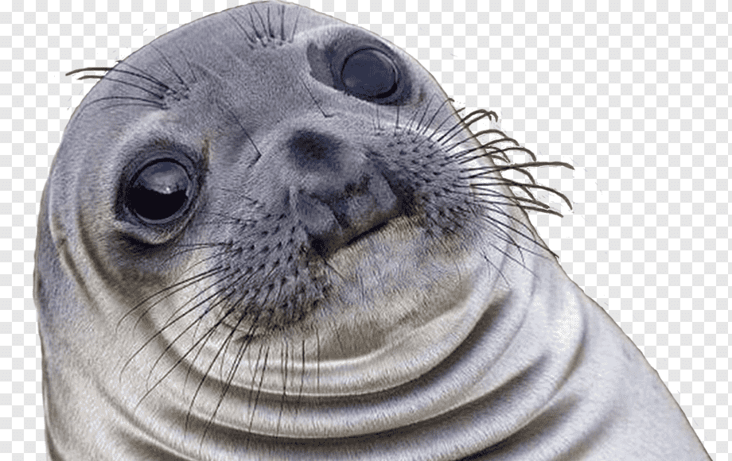

Sobre o universo de The Golden Kingdom:
Durante a Era De Paz na Grécia Antiga, a união entre os Deuses do Olimpo e os humanos na Terra se fortificou.
Cada vez mais próxima de uma era perfeita, os Olimpianos concediam á certos escolhidos dignos uma fração de seu poder para auxiliar no controle da pacificação entre os reinos, conhecidos pelo título de "Campeões".
Dentre os Campeões, um se destacava pelo seu altruismo e conduta com o seu povo, sendo usado até mesmo como referência entre a população de outros reinos: o rei Midas, de Frígia.
Porém, em um certo dia nublado, Midas se trancou em seu castelo de forma abrupta e não esclareceu o motivo. Há boatos de guardas que escutavam o rei resmungar palavras estranhas e desconhecidas, e também possuia saindo de seus olhos e pontas dos dedos das mãos um liquido dourado misterioso.
Preocupados com o nobre rei de Frígia, os Campeões dos outros reinos e cidades se encontraram na porta de seu castelo e pediram uma reunião com urgência, que foi concendida com o portão abrindo aos seus pés.
Este dia sombrio marcou o começo do fim da Era De Paz, pois nna noite daquele dia, na entrada de cada reino e cidade, foram encontrados os corpos de seus Campeões, onde de suas feridas não saia sangue, más sim ouro liquido.
Os Deuses convocam os povos e declaram guerra contra Frígia, aonde agora é somente um lugar assombrado pelo ouro e pela morte.